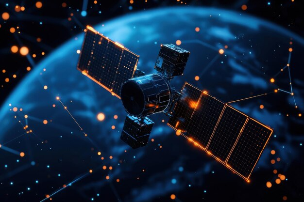

El Proyecto Blue Beam
El Proyecto Blue Beam es una teoría conspirativa que sostiene que agencias gubernamentales y corporaciones de élite estarían preparando un plan global para manipular la percepción de la humanidad y establecer un nuevo orden mundial. Según esta idea, se utilizarían tecnologías avanzadas de proyección holográfica, manipulación del clima, control mental y señales electromagnéticas para simular la aparición de fenómenos sobrenaturales o religiosos, con el objetivo de provocar miedo, confusión y obediencia masiva. La teoría plantea que estos eventos podrían ser utilizados para justificar un gobierno único y la centralización del poder mundial.

Los defensores de la teoría afirman que el proyecto se desarrolla en varias fases. La primera consistiría en la destrucción de todas las creencias religiosas tradicionales mediante la difusión de información falsa, manipulación de hechos históricos y creación de crisis de fe, buscando que la población pierda confianza en sus sistemas de creencias. La segunda fase incluiría grandes proyecciones holográficas en el cielo, mostrando figuras religiosas o extraterrestres, acompañadas de efectos de sonido que simularían mensajes divinos o interdimensionales. Estas proyecciones, combinadas con señales electromagnéticas, podrían influir en la mente de las personas, generando experiencias intensas de miedo o éxtasis.
La tercera fase, según la teoría, implicaría la comunicación directa con la población a través de tecnología capaz de transmitir mensajes directamente al cerebro de cada individuo, haciendo creer a las personas que reciben instrucciones de seres superiores o entidades espirituales. La cuarta fase culminaría con un evento global de caos, utilizado como justificación para instaurar un control total y eliminar cualquier resistencia a la autoridad central. Algunos conspiracionistas aseguran que estas fases ya se estarían probando parcialmente mediante experimentos con hologramas, control de satélites y tecnologías avanzadas de comunicación.
La teoría incluye también rumores sobre el uso de armas climáticas y control del tiempo, con huracanes, terremotos y otros fenómenos naturales que podrían ser manipulados para sembrar el miedo y fortalecer la percepción de que fuerzas superiores están interviniendo en el planeta. Otros afirman que dispositivos de manipulación de la mente podrían inducir pánico colectivo o alinear las emociones de la población con los objetivos de los gobiernos y corporaciones involucradas. Algunos incluso sostienen que ciertos eventos históricos, como guerras o desastres masivos, habrían servido como pruebas previas de estas tecnologías.
Según la narrativa conspirativa, el Proyecto Blue Beam no solo se centra en la tecnología sino también en la psicología social, combinando propaganda, miedo y manipulación mediática para preparar a la humanidad para aceptar un cambio drástico en la estructura de poder global. Esta teoría ha sido popularizada en libros, documentales y foros de internet, generando debates sobre los límites entre la ciencia, la tecnología y la ética en la manipulación de la sociedad.
A pesar de que no existen pruebas verificables que confirmen la existencia del Proyecto Blue Beam, su historia combina hechos históricos, avances tecnológicos reales y rumores, generando un escenario impresionante y aterrador que mantiene cautiva la imaginación de quienes buscan entender los misterios detrás de los eventos globales. La narrativa de este proyecto se mantiene como una de las teorías de conspiración más complejas y detalladas, mezclando tecnología, control mental, fenómenos sobrenaturales y objetivos políticos ocultos.